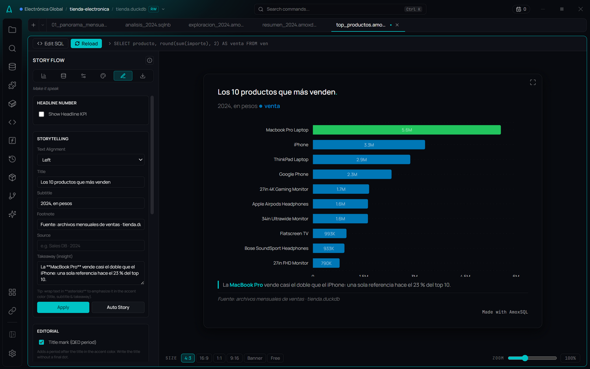
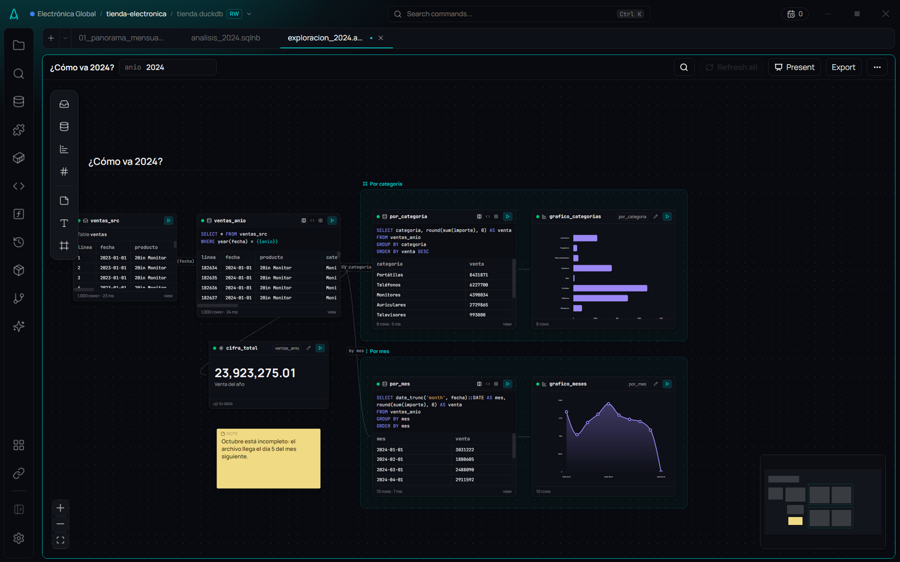
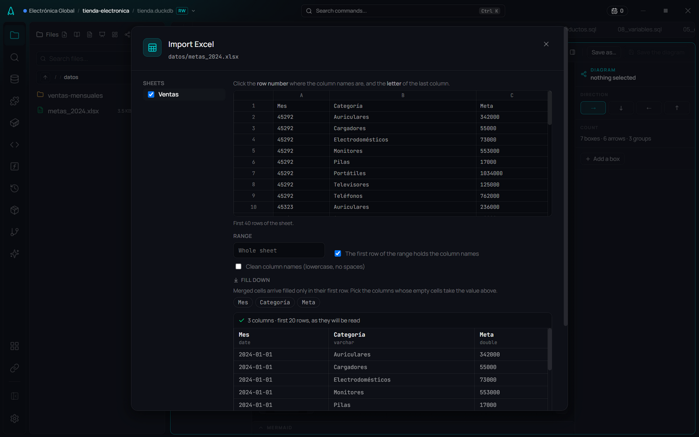
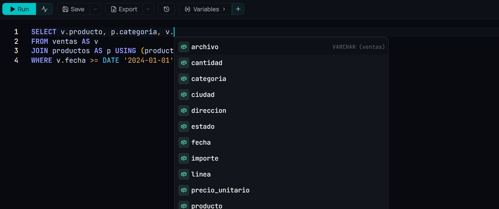
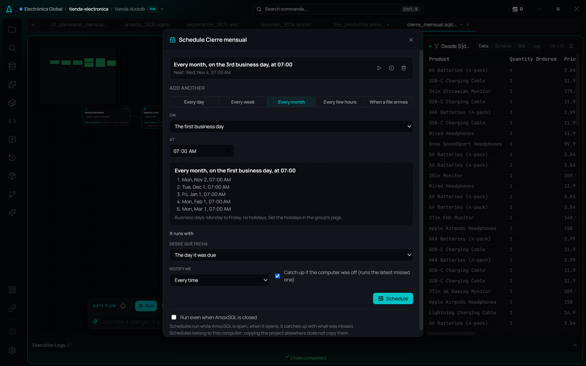

Gráficos que cuentan una historia.
17 tipos de gráfico en seis pasos, con título, la conclusión resaltada, anotaciones y línea de meta. Cada gráfico guarda su consulta, así que siempre puedes regenerarlo.

AmoxSQL es tu espacio de análisis de datos, en tu propia computadora. Abre los Excel y CSV tal como te llegan, analízalos con SQL y convierte el resultado en un reporte, una presentación o un proceso que se ejecuta solo cada mes.
Gratis si lo compilas desde el código · Mac con Apple Silicon en beta · Con el motor de DuckDB

Hoy eso suele ser un Excel con fórmulas que se rompen, varias herramientas y el mismo correo cada lunes. En AmoxSQL es un solo proyecto: una carpeta con archivos de texto que puedes versionar y compartir.

datos/metas_2024.xlsx · fuentes."ventas-mensuales"Capturas reales del proyecto de ejemploExplora dos caminos desde la misma base, deja una nota junto a la cifra que la motivó y ten todo tu razonamiento a la vista.
No tienes que dibujarlas: cuando una consulta usa otra tarjeta, la flecha aparece.
Cada tarjeta recuerda su último resultado, así que el lienzo se ve completo sin volver a ejecutar nada.
Cada marco se convierte en una diapositiva y cada rama, en un proceso programado.
17 tipos de gráfico en seis pasos, con título, la conclusión resaltada, anotaciones y línea de meta. Cada gráfico guarda su consulta, así que siempre puedes regenerarlo.

Escribe v. y te muestra las columnas de esa tabla. Tus métricas de negocio se vuelven funciones: venta_total(importe).

Agrupa tus proyectos por cliente, con su contexto, sus métricas y un aviso de lo que falló mientras no estabas.
Duplicados, valores atípicos, fechas faltantes y columnas redundantes, con un clic.
dbt integrado en el editor, con vista previa y linaje, y lagos de datos con versiones que puedes consultar tal como estaban en una fecha.
Conoce tus métricas, cómo se relacionan tus tablas y el vocabulario de tu negocio. Funciona con modelos locales o en la nube, y tú decides por cliente qué datos puede ver.
Todo lo que creas es un archivo legible: si cambias una línea, el historial muestra solo esa línea.
.sql.sqlnb.amoxcanvas.amoxvis.amoxdeck.sqlchain.amoxdiagramPrograma un proceso para los días hábiles, para el tercer día hábil de cada mes o para cuando llegue un archivo nuevo. Si el cliente cambió una columna, el proceso se detiene y te dice cuál.

-- Los 22 meses de una vez, sin importar archivos SELECT date_trunc('month', "Order Date") AS mes, venta_total(importe) AS venta FROM fuentes."ventas-mensuales" GROUP BY ALL ORDER BY mes;
De Amoxtli, «códice» en náhuatl: el libro donde se guardaba lo que se sabía.
Hecho en Latinoamérica para el mundo.